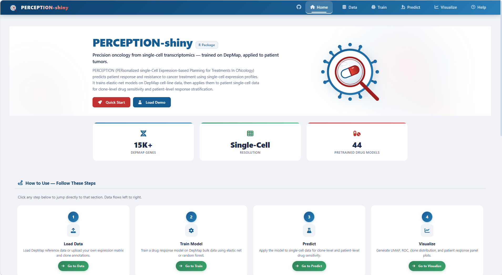
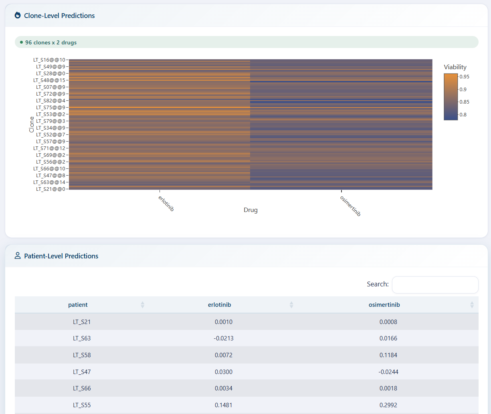
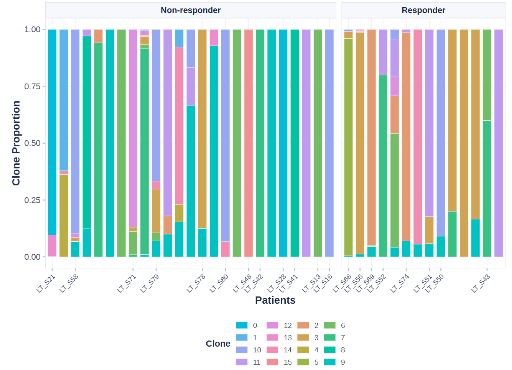
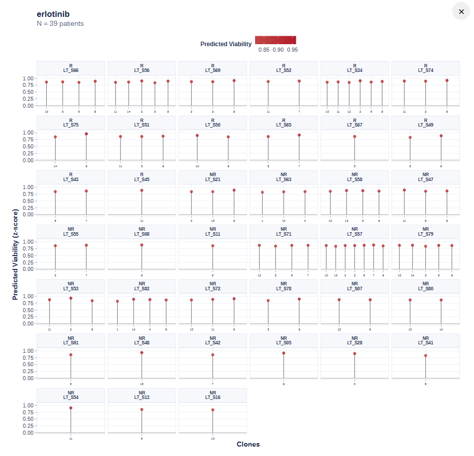
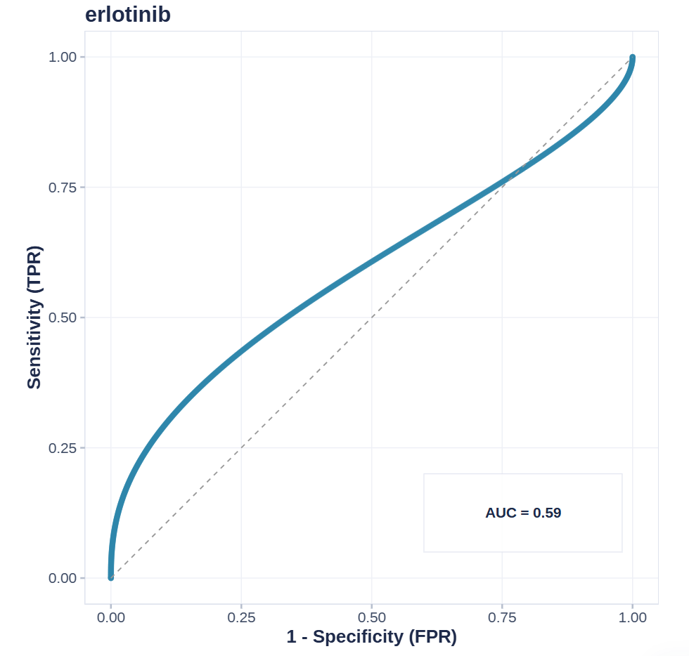
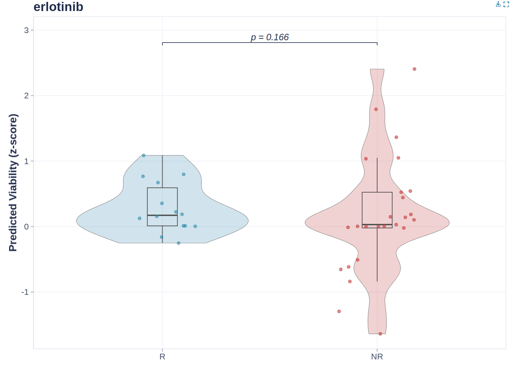
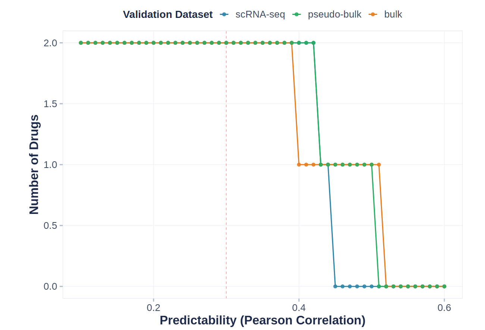
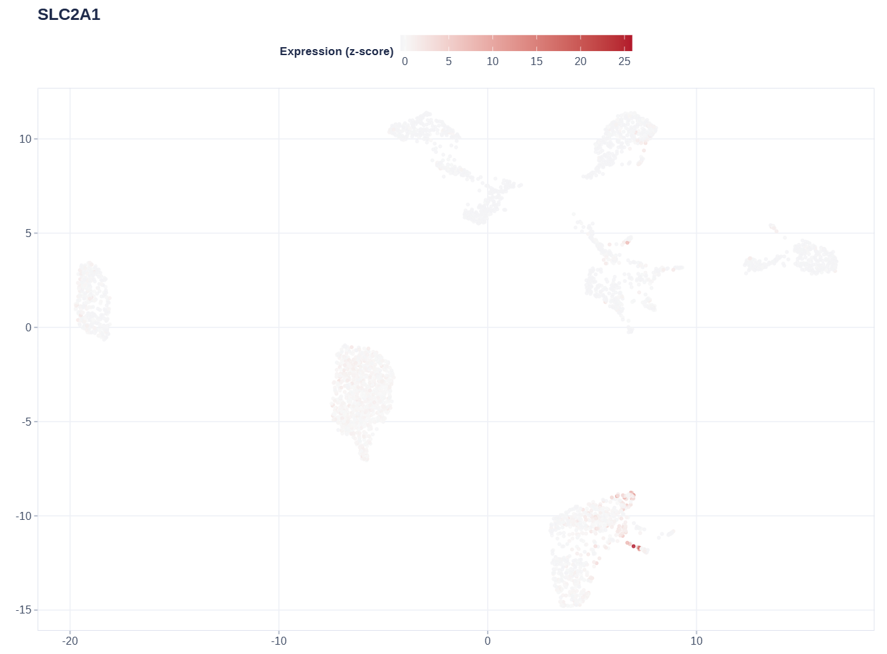
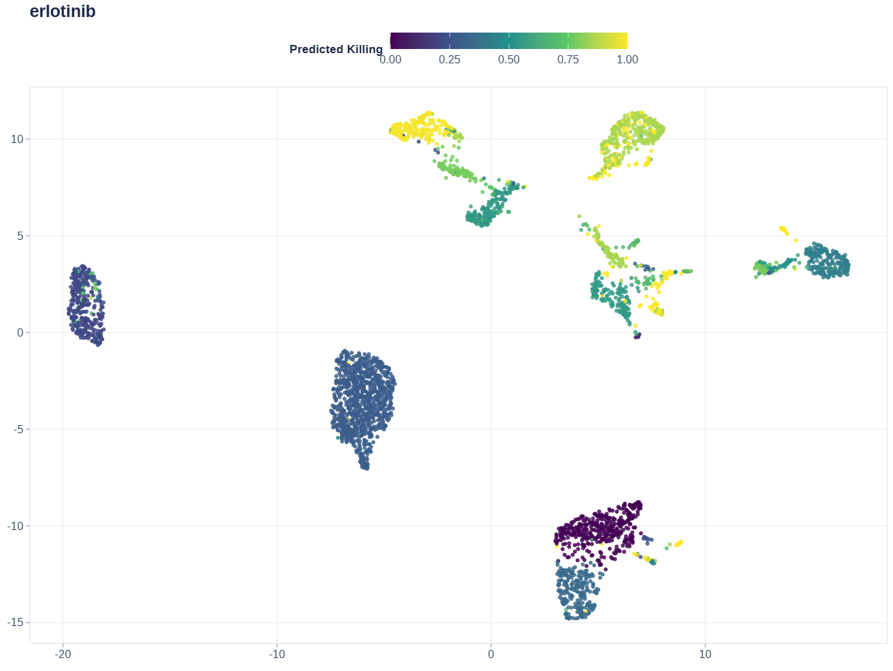

PERCEPTION-shiny 使用教程
PERCEPTION-shiny 是 PERCEPTIONx R 包的交互式网页应用（Shiny）。它把完整的分析流水线——数据加载、模型训练、药物敏感性预测、结果可视化——封装成点选式界面，无需写代码即可完成从”患者单细胞表达矩阵”到”克隆级杀伤分数 + 患者级响应分层”的全流程分析。
方法学基础：PERCEPTION（PERsonalized single-Cell Expression-based Planning for Treatments In ONcology），在 DepMap 细胞系数据上训练弹性网络模型，预测患者对药物的响应与耐药。
目录
- 0. 环境要求与启动
- 1. 界面总览
- 2. Data 页：加载数据
- 3. Train 页：训练模型（可选）
- 4. Predict 页：预测杀伤值
- 5. Visualize 页：可视化
- 6. Help 页
- 7. 常见问题（FAQ）
- 8. 引用与联系
0. 环境要求与启动
0.1 环境要求
- R ≥ 4.1.0
- 主要依赖包：
devtools、shiny、bslib、Seurat、ggplot2、ggiraph、glmnet、caret、DT、plotly、waiter、thematic、callr、readxl（缺失时应用会在相应功能处提示安装）
0.2 启动方式
在包源码根目录打开 R/RStudio，运行：
devtools::load_all() # 从源码加载 PERCEPTIONx
run_perception_app() # 启动应用（自动打开浏览器）或直接运行源码目录中的应用：
shiny::runApp("inst/shiny/app")0.3 整体流程
DepMap 参考数据 ──► 模型训练 ──► 克隆/患者预测 ──► 可视化与验证
▲ ▲ ▲ ▲
Data 页 Train 页 Predict 页 Visualize 页
（或直接加载 （或直接用 （选模型后
预训练模型） 44 药预训练 一键预测）
模型，跳过）提示：想最快看到效果，按 Load Demo → Predict → Visualize 的顺序点击即可，全程不需要训练。
异步架构（多用户友好）：训练、聚类（prepare_data）、预测、绘图等耗时计算全部在后台独立进程（worker）中执行，界面进程只负责显示和收发文件，因此一个用户运行大任务时，其他用户的操作完全不受影响。
- 训练：标准 DepMap 走共享 master（全局一个后台进程，加载一份 DepMap，Linux 上并行任务共享同一份内存，空闲 12 小时自动退出释放内存）；用户上传的 DepMap 走专属隔离 worker，互不污染。
- 聚类 / 预测 / 绘图 / Load Demo：每个会话一个轻量 worker 处理，计算结果写回文件后界面自动刷新。
- 环境变量（部署时可选）：
PERCEPTION_WORKERS（共享池并行任务数，默认 16）、PERCEPTION_WORKER_IDLE_MINUTES（master 空闲退出分钟数，默认 720）。
1. 界面总览

顶部导航栏包含 6 个标签页：Home、Data、Train、Predict、Visualize、Help。数据从左向右流动：先加载数据（Data），再训练/加载模型（Train），然后预测（Predict），最后可视化与验证（Visualize）。
首页包含：介绍、四步引导（Load Data → Train Model → Predict → Visualize，点击可跳转到对应页面）、数据加载状态一览、功能特性与引用信息。页面上的 Quick Start 与 Load Demo 按钮可一键加载演示数据。
2. Data 模块：加载数据
Data 页是分析的起点，负责加载四种数据：演示数据 / DepMap 参考数据 / 用户表达矩阵 / 临床响应。每一项加载成功后，左侧状态徽章会变绿。
Load Demo：
点击 Load Demo 一键生成合成演示数据：49 个基因 × 400 个细胞 × 20 例患者，并自动完成 Seurat 聚类、秩归一化，随后训练演示模型。用于快速测试整个流程，感受各功能页的交互方式。
2.1 加载 DepMap 参考数据（训练必需）
两种方式：
- Download & Load：点击按钮自动从官方镜像下载 DepMap 参考集（约 567 MB，1.5 万+ 基因 × 1,000+ 细胞系），下载完成后自动加载。这是标准训练/参考输入，也是内存和磁盘占用最大的步骤。
-
本地上传 .RDS：如果本地已有 DepMap
文件（
DepMap.RDS格式），直接 Browse 选中即自动加载。
关于内存（重要）：界面进程只读取 DepMap 的元数据（基因名、药物列表、各组件维度，几百 KB）；完整的多 GB 对象由后台 worker 在独立进程中加载，专供模型训练使用。因此多个用户同时使用也不会每个会话各占一份 8 GB 内存（参考架构说明见 0.3 节）。
2.2 加载模型
两种方式：
-
Download & Load：一键下载 44 种 FDA
批准药物的预训练模型（如
abemaciclib、erlotinib、osimertinib），多选时每项右侧有 × 可单独删除 -
本地上传
.RDS：选择训练好的模型文件（
train_models()或 Train 页导出的 RDS），选中即自动加载
2.3 上传表达矩阵（患者 scRNA-seq）
- 支持的格式：CSV / TSV / TXT / Excel（.xlsx/.xls）/ RDS
- 支持的 R 对象（RDS）：需为数值矩阵或 data.frame（基因 × 细胞）；不支持直接传入 Seurat 对象，请先导出为矩阵
- 矩阵方向：基因 × 细胞（行为基因、列为细胞）；若第一列是基因名字符列（Excel/csv 导出常见），会自动转为行名
- 关于归一化：表达数据需要是秩归一化（rank-normalized）后使用。若上传的是原始计数，勾选后由应用在聚类流程中自动归一化。
2.4 上传细胞-患者映射（Mapping）
- 支持的格式：CSV / TSV / TXT / Excel / RDS
-
必须包含两列：
cell_id（细胞名，与表达矩阵列名一致）和patient_id（细胞所属患者）。列名大小写均可（Patient、PATIENT都能识别） -
RDS 命名列表：若 RDS 是”患者 →
细胞名向量”的命名列表（如论文 demo 的
PRJNA591860_sample_cell_names.RDS），会自动转换为长格式；无细胞的空样本自动丢弃
2.5 上传临床响应（Response，可选但推荐）
- 支持的格式：CSV / TSV / TXT / Excel / RDS
-
必须包含两列：
patient（与 Mapping 的patient_id完全一致）和response（患者对药物的真实临床结局） -
响应值自动归一化：
responder/responsive/r/sensitive→ Responder；non-responder/nr/resistant→ Non-responder - 上传时会自动检查 patient 是否与 Mapping 对齐；若完全不重叠会发出警告
- 为什么需要：只有知道真实结局，才能验证预测准不准（画 ROC、响应者/非响应者箱线图）。只想看预测分数可以不传
3. Train 模块：训练模型（可选）
前置条件：需先在 Data 页加载 DepMap 参考数据（若缺失，页面顶部会提示）。
如果只是想用现有模型预测，完全可以不训练——直接用 Data 页加载的 44 个预训练模型即可。Train 页适合：换药物、换癌症类型、自定义基因集、想查看模型在三种数据验证集上的表现。
4. Predict 模块：预测杀伤值
选择已加载的模型（Data 页加载的预训练模型或 Train 页训练出的模型），点击预测：
- Clone-level（克隆级）：每个克隆 × 每个药物的活力分数。分数语义：模型输出的是 viability（存活度），值越高 = 越耐药、越低 = 越敏感；预测热图展示的是模型原始预测值（未归一化）；棒棒糖图和 UMAP Drug Viability 使用 z-score（以 0 为中心，可负）
-
Patient-level（患者级）：按克隆占比把克隆分数聚合到患者（默认
weighted_max），得到每例患者的药物敏感性分层
输出包括交互式热图（克隆 × 药物，plotly）与可下载的预测表格。

5. Visualize 模块：可视化
此模块用于将预测结果进一步可视化，故而必须先进行预测。
所有图表均为交互式 SVG（基于 ggiraph）：鼠标悬停任意点/条即可看到详细信息（克隆 ID、杀伤分数、占比、FPR/TPR 等）。图内工具栏禁用了缩放；导出为 PNG/PDF 使用页面顶部的下载按钮。
5.1 Clone Distribution（stackplot）

展示每例患者内部各克隆的占比构成，一个色带 = 一个克隆（≤15 个克隆时使用内置协调色板）。
注意：克隆身份取决于数据来源——全局聚类路径下，同一克隆（同色）确实跨患者共享；克隆级输入（如按患者编号的 c1/c2/c3）时，跨患者颜色相同不代表同一克隆来源，它只是共享的类别标签。
5.2 Clone Viability（lolliplot）

- 展示规则：全样本、全克隆展示，一例患者一个分面，一根棒 = 一个克隆
- 颜色：蓝-白-红发散——蓝 = 预测敏感（低活力），红 = 预测耐药（高活力）。色标范围随数据自适应，极端 z-score 仍有真实颜色（不会变灰/无色）
- 点大小：克隆占比（占比大的克隆点大）
- 排序：患者内按占比降序；有响应数据时 Responder 排在前面
- y 轴：Predicted Viability（z-score），0 线为中位参考
Combination（联合）模式：Drug Name 下拉框默认选中 Combination，用于多药联合（如论文的 DARA–KRD 骨髓瘤队列）。合成规则与论文 Fig. 2 完全一致——克隆级：先把每个药的克隆级 viability 跨全部克隆做全局 z-score，再逐克隆取
min（IDA 原则：联合疗效由组合中最有效的那一药决定，对应论文pmin(z_carfilzomib, z_lenalidomide)）；患者级：取最耐药克隆 × 其丰度占比的加权最大值（weighted_max，论文 5 种策略中 AUC 最高的第 5 种）。棒棒糖图中每根棒 = 一个克隆的联合 z-viability。
5.3 ROC Curve

使用真实临床响应（Data 页上传的 Response）与患者级预测分数绘制 ROC
曲线，AUC 越接近 1 说明预测分层能力越强。Drug Name 选
Combination（默认）时使用患者级联合分数（weighted_max，对应论文
Fig. 2e）；选单个药物时查看该药的 ROC（对应各单药视图）。
5.4 Response Boxplot（R vs NR）

分组展示 Responder 与 Non-responder 的预测分数分布，附带显著性检验结果。同样地，选 Combination（默认）即展示联合分数的 R/NR 分布（对应论文 Fig. 2d）。
5.5 Model Performance

该图位于 Train 页（对应 3.2 节 Performance Plot），不属于 Visualize 页。展示训练模型的验证性能曲线（需 Train 页训练的模型；预训练模型不适用，页面会提示）。
5.6 空间图（UMAP / t-SNE）


选择降维方法和着色变量：
- Gene Expression：每个细胞的单基因真实表达量，值经 5th–95th 百分位压缩到 [0, 1]（range01 归一化），灰→红连续色标（灰 = 无/低表达，红 = 高表达）——看基因在哪群细胞高表达
- Drug Viability：每个细胞回填所属克隆的预测活力分数，呈”拼接色块”——看哪些克隆被预测耐药（亮）或敏感（暗）
- Clone / Cluster：按克隆（聚类）着色——看分群结构
对照读法：Gene Expression 高表达的细胞群，如果在 Drug Viability 图中也是暖色（高活力），说明该基因高表达与预测耐药正相关；反之（暗色/低活力）则与敏感相关。注意两图色标刻度不同，只看空间分布模式。
例如，根据上方两个示例图能得出初步的有效信息：
- 耐药标志物线索：最右下角的克隆中，SLC2A1 的高表达区与厄洛替尼预测高活力区在空间上存在重叠，提示 SLC2A1 高表达可能是该耐药克隆的标志物。
- 敏感主群体：位于正上方的几个主要细胞群，SLC2A1 表达接近于零，却恰好是预测药物活力最低的区域。
因此，在PRJNA591860数据集中，SLC2A1 的局部异常高表达显著指向厄洛替尼耐药；而绝大多数不表达 SLC2A1 的细胞，对药物高度敏感。这为“SLC2A1 可能是耐药靶点”提供了初步的单细胞层面证据。
7. 常见问题（FAQ）
Q1：上传文件提示 “Maximum upload size exceeded”？ 应用已把上传上限设为 1 GB。超过该大小的数据请先本地处理（如按基因子集）再上传；DepMap 优先用 “Download & Load” 按钮（服务器直下，不经浏览器）。
Q2：Model Performance 图提示缺少 performance 字段？
该图需要训练流程产生的验证指标，预训练模型（load_model）不携带。请先用
Train 页训练，或在 Data 页加载演示模型。
Q3：response 标签怎么构造？ 构造两列
patient / response。patient
必须与 Mapping 的 patient_id
完全一致；response 取值会自动归一化（responder → Responder
等）。响应标签保留多组（如 TN/RD/PD），不做时间点折叠；ROC
需要二分类时，由用户在可视化页选择两组进行比较。
Q4：预测分数和我想的不一样？ 预测分数是模型基于 DepMap 训练得到的相对排名（未归一化）：预测热图展示的是模型原始预测值，棒棒糖图与 UMAP Drug Viability 使用 z-score（以 0 为中心，可负）。数值越高表示在该批次克隆中越耐药（活力越高），不代表绝对杀伤比例。多克隆异质性、耐药通路激活都会拉高分数（活力升高）。
Q5：关闭应用后数据会留下吗？ 会保留。DepMap
数据缓存在持久化目录（Windows：用户数据目录，Linux 可用环境变量
PERCEPTIONX_DEPMAP_CACHE_DIR 指定），带 12
小时未使用自动过期（TTL）机制。应用关闭后文件仍留在磁盘；超过 12
小时未使用，下次点击时会自动删除并重新下载。
Q6：为什么点训练/聚类/预测/画图时界面不卡？ 训练、聚类、预测、绘图都在后台独立进程（worker）中运行，界面只做轮询和显示进度，因此大任务执行期间仍可正常操作其他页面。若后台进程意外中断（极少数情况），页面会提示 “Background worker stopped” 而非一直转圈；重新点击提交即可。
8. 引用与联系
若使用本应用/包，请引用原始方法学论文：
Sinha, S., Vegesna, R., Mukherjee, S. et al. PERCEPTION predicts patient response and resistance to treatment using single-cell transcriptomics of their tumors. Nature Cancer 5, 938–952 (2024). DOI: 10.1038/s43018-024-00756-7
仓库：github.com/WangLabCSU/PERCEPTIONx
问题反馈：jiading682@qq.com
PERCEPTION-shiny © PERCEPTIONx authors. 本文档为使用教程，具体界面以实际版本为准。